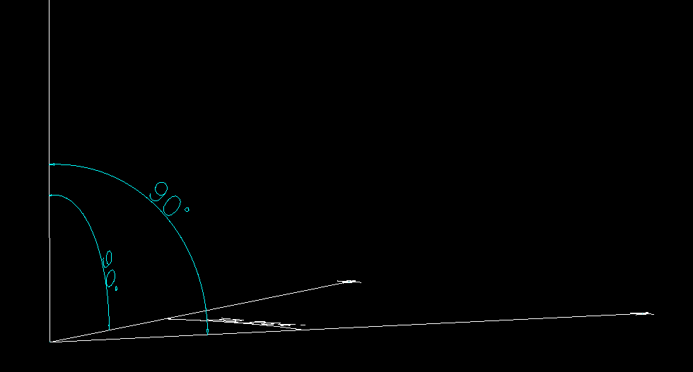
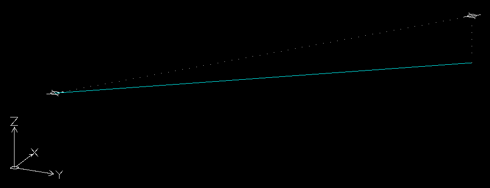

Class Vector3D
- Namespace
- SearchAThing.Sci
- Assembly
- netcore-sci.dll
can be used to describe a wcs point or a vector x,y,z components from some reference origin
public class Vector3D : Geometry- Inheritance
-
Vector3D
- Inherited Members
- Extension Methods
Constructors
Vector3D()
zero vector
[JsonConstructor]
public Vector3D()Remarks
Vector3D(Vector3D)
build a copy of given vector
public Vector3D(Vector3D v)Parameters
vVector3D
Vector3D(double, double)
build a vector (x,y,0) by given components
public Vector3D(double x, double y)Parameters
Remarks
Vector3D(double, double, double)
build a vector by given components
public Vector3D(double x, double y, double z)Parameters
Remarks
Vector3D(double[])
build a vector (x,y,0) or (x,y,z) from given 2 or 3 doubles
public Vector3D(double[] arr)Parameters
arrdouble[]
Remarks
Vector3D(string)
parse cad id string (eg. "X = 4.11641325 Y = 266.06066703 Z = 11.60392802") constructing a point
public Vector3D(string cad_id_string)Parameters
cad_id_stringstringcad id string
Remarks
Fields
One
one vector (1,1,1)
public static readonly Vector3D OneField Value
XAxis
xaxis vector (1,0,0)
public static readonly Vector3D XAxisField Value
Remarks
YAxis
yaxis vector (0,1,0)
public static readonly Vector3D YAxisField Value
Remarks
ZAxis
zaxis vector (0,0,1)
public static readonly Vector3D ZAxisField Value
Remarks
Zero
zero vector (0,0,0)
public static readonly Vector3D ZeroField Value
Remarks
Properties
A0QCadScript
public string A0QCadScript { get; }Property Value
CadScript
cad script for this vector as wcs point
public string CadScript { get; }Property Value
CadScriptLine
cad script for a line (0,0,0) to this vector
public string CadScriptLine { get; }Property Value
CadScriptLineFrom
cad script for a line departing from this wcs point
public string CadScriptLineFrom { get; }Property Value
Coordinates
enumerate coordinates
public IEnumerable<double> Coordinates { get; }Property Value
Remarks
DxfEntity
Create dxf point entity suitable for netDxf addEntity. ( Geometry DxfEntity implementation )
public override EntityObject DxfEntity { get; }Property Value
- EntityObject
Remarks
GeomFrom
This vector. ( Geometry GeomFrom implementation )
[JsonIgnore]
public override Vector3D GeomFrom { get; }Property Value
Remarks
GeomTo
This vector. ( Geometry GeomTo implementation)
[JsonIgnore]
public override Vector3D GeomTo { get; }Property Value
Remarks
IsZeroLength
states if this is a zero vector
public bool IsZeroLength { get; }Property Value
Remarks
this[int]
indexed vector component
public double this[int index] { get; }Parameters
indexint
Property Value
Length
Length of this vector. ( Geometry Length implementation )
public override double Length { get; }Property Value
Remarks
Max
max between X,Y,Z
public double Max { get; }Property Value
MidPoint
public override Vector3D MidPoint { get; }Property Value
Min
min between X,Y,Z
public double Min { get; }Property Value
Vertexes
Enumerable with only this vector. ( Geometry Vertexes implementation )
[JsonIgnore]
public override IEnumerable<Vector3D> Vertexes { get; }Property Value
Remarks
X
X vector component
public double X { get; }Property Value
Remarks
Y
Y vector component
public double Y { get; }Property Value
Remarks
Z
Z vector component
public double Z { get; }Property Value
Remarks
Methods
Abs()
compute (Abs(v.x), Abs(v.y), Abs(v.z))
public Vector3D Abs()Returns
AngleRad(double, Vector3D)
angle between this and given vector
public double AngleRad(double tol, Vector3D to)Parameters
toldoublelength tolerance to test vector equalities ( use Constants.NormalizedLengthTolerance when comparing normalized vectors )
toVector3Dother vector
Returns
- double
angle between two vectors (rad)
Remarks
AngleToward(double, Vector3D, Vector3D)
compute angle required to make this point go to the given one if rotate right-hand around given reference axis
public double AngleToward(double tol, Vector3D to, Vector3D refAxis)Parameters
toldoublelength tolerance ( use Constants.NormalizedLengthTolerance if working with normalized vectors )
toVector3Dpoint toward rotate this one
refAxisVector3Dreference axis to make right-hand rotation of this point toward given one
Returns
- double
angle (rad)
Axis(int)
retrieve wcs axis by given index
public static Vector3D Axis(int ord)Parameters
ordint0:(1,0,0) 1:(0,1,0) 2:(0,0,1)
Returns
Remarks
BBox(double)
Compute bbox of this point. ( Geometry BBox implementation ).
public override BBox3D BBox(double tol)Parameters
toldoublelength tolerance
Returns
Remarks
Clamp(Vector3D, Vector3D)
return clamped Vector3D between [min,max] interval
public Vector3D Clamp(Vector3D min, Vector3D max)Parameters
Returns
- Vector3D
given vector with xyz components clamped to corresponding min,max components
Colinear(double, Vector3D)
states if this vector is colinear to the given one
public bool Colinear(double tol, Vector3D other)Parameters
Returns
ColinearScalarOffset(double, Vector3D, Vector3D)
retrieve signed offset of this point respect given origin point in the given normalized direction v. precondition: vector v must colinear to (this-origin) and must already normalized
public double ColinearScalarOffset(double tol, Vector3D origin, Vector3D v)Parameters
Returns
Concordant(double, Vector3D)
states if this vector concord to the given one
NOTE: it does not test two vectors are parallels ( precondition must meet )
public bool Concordant(double tol, Vector3D other)Parameters
toldoublegeometric tolerance ( Constants.NormalizedLengthTolerance if comparing normalized vectors )
otherVector3Dother vector
Returns
ConcordantColinear(double, Vector3D)
statis if this vector is concordant and colinear to the given one
public bool ConcordantColinear(double tol, Vector3D other)Parameters
toldoublegeometric tolerance ( Constants.NormalizedLengthTolerance if comparing normalized vectors )
otherVector3Dother vector
Returns
Copy()
create copy of this geometry.
public override Geometry Copy()Returns
Remarks
it's required to call base.CopyFrom(other) to ensure geometry properties to be copied.
CrossProduct(Vector3D)
Cross product ( not normalized ) ;
a x b = |a| |b| sin(alfa) N ;
a x b = | x y z |
| ax ay az |
| bx by bz |
reference ;
public Vector3D CrossProduct(Vector3D other)Parameters
otherVector3Dother vector
Returns
Remarks
unit test 
Debug(string)
debug to console with optional prefix
public Vector3D Debug(string prefix = "")Parameters
prefixstringoptional prefix
Returns
- Vector3D
vector
DisambiguatedPoints(double, Vector3D)
returns p1 and p2 if one of the p1 coords are less than corresponding p2 coords ; elsewhere returns p2 and p1. Useful to obtain the same sequence order independant from order of operands.
public IEnumerable<Vector3D> DisambiguatedPoints(double tol, Vector3D other)Parameters
Returns
Distance(Vector3D)
compute distance between this point and the other given
public double Distance(Vector3D other)Parameters
otherVector3D
Returns
Remarks
Distance(double, Line3D)
compute perpendicular(min) distance of this point from given line
public double Distance(double tol, Line3D other)Parameters
Returns
Remarks
Divide(int, bool)
Divide this point returning itself. ( Geometry Divide implementation )
public override IEnumerable<Vector3D> Divide(int cnt, bool include_endpoints = false)Parameters
Returns
Remarks
DotProduct(Vector3D)
compute dot product of this vector for the given one
a b = |a| |b| cos(alfa)
public double DotProduct(Vector3D other)Parameters
otherVector3Dsecond vector
Returns
Remarks
EqualsAutoTol(Vector3D)
check if this vector equals the given one component by component using EqualsAutoTol
public bool EqualsAutoTol(Vector3D other)Parameters
otherVector3D
Returns
Remarks
EqualsTol(double, Vector3D?)
checks vector component equality vs other given
public bool EqualsTol(double tol, Vector3D? other)Parameters
toldoublegeometric tolerance ( note: use Constants.NormalizedLengthTolerance )
otherVector3Dvector to compare to this
Returns
Remarks
EqualsTol(double, double, double)
checks only x,y
public bool EqualsTol(double tol, double x, double y)Parameters
toldoublegeometric tolerance ( note: use Constants.NormalizedLengthTolerance )
xdoublex coord
ydoubley coord
Returns
Remarks
EqualsTol(double, double, double, double)
checks vector component equality vs other given
public bool EqualsTol(double tol, double x, double y, double z)Parameters
toldoublegeometric tolerance ( note: use Constants.NormalizedLengthTolerance )
xdoublex coord
ydoubley coord
zdoublez coord
Returns
Remarks
From2DCoords(params double[])
Create an array of Vector3D from given list of 2d coords ( eg. { 100, 200, 300, 400 } will create follow list of vector3d = { (100,200,0), (300,400,0) }
public static List<Vector3D> From2DCoords(params double[] coords)Parameters
coordsdouble[]
Returns
From3DCoords(params double[])
Create an array of Vector3D from given list of 3d coords ( eg. { 100, 200, 10, 300, 400, 20 } will create follow list of vector3d = { (100,200,10), (300,400,20) }
public static List<Vector3D> From3DCoords(params double[] coords)Parameters
coordsdouble[]
Returns
FromString(string)
parse vector3d from string format "(x y z)" or "(x,y,z)" invariant type
public static Vector3D FromString(string str)Parameters
strstring
Returns
FromStringArray(string)
parse vector3d from array "(x1,y1,z1);(x2,y2,z2)"; an appropriate string can be generated with StringRepresentation extension.
public static IEnumerable<Vector3D> FromStringArray(string str)Parameters
strstring
Returns
FromTxtPointsList(string, CultureInfo?)
retrieve list of Vector3D by reading from a txt file, for example: -53.54533794,-141.18745265 18.20103872,-149.89903999 85.77777676,-124.27056375
notes:
- supports also third coord (Z) ;
- whitespace are removed ;
- empty lines are removed
public static IEnumerable<Vector3D> FromTxtPointsList(string txt, CultureInfo? culture = null)Parameters
txtstringtxt data to read
cultureCultureInfoculture for number parsing (default: invariant)
Returns
- IEnumerable<Vector3D>
enumerable of Vector3D corresponding to data
GeomEquals(double, Geometry, bool)
states if this geom equals to given other
public override bool GeomEquals(double tol, Geometry other, bool checkSense = false)Parameters
toldoublelength tolerance
otherGeometryother geom
checkSenseboolif false two geometry with different sense but same space coverage are considered equals
Returns
GeomIntersect(double, Geometry, GeomSegmentMode, GeomSegmentMode)
find intersections between this and another geometry resulting in zero or more geometries.
public override IEnumerable<Geometry> GeomIntersect(double tol, Geometry other, GeomSegmentMode thisSegmentMode, GeomSegmentMode otherSegmentMode)Parameters
toldoubleotherGeometrythisSegmentModeGeomSegmentModeif this is Line3D specifies how to consider
otherSegmentModeGeomSegmentModeif other is Line3D specifies how to consider
Returns
GetOrd(OrdIdx)
retrieve the component (0:X, 1:Y, 2:Z)
public double GetOrd(OrdIdx ord)Parameters
ordOrdIdx
Returns
Remarks
GetOrd(int)
retrieve the component (0:X, 1:Y, 2:Z)
public double GetOrd(int ord)Parameters
ordint
Returns
Remarks
IsParallelTo(double, Vector3D)
Note: tol must be Constants.NormalizedLengthTolerance if comparing normalized vectors
public bool IsParallelTo(double tol, Vector3D other)Parameters
Returns
IsPerpendicular(Vector3D)
states is this vector is perpendicular to the given one
public bool IsPerpendicular(Vector3D other)Parameters
otherVector3Dother vector
Returns
Remarks
LineDir(Vector3D, double, bool)
build Line3D from this to (this+dir*len)
public Line3D LineDir(Vector3D dir, double len, bool applyDirNorm = false)Parameters
dirVector3Ddirection
lendoublelength of the line
applyDirNormboolapply normalization to given direction ( default:false )
Returns
- Line3D
Line3D from this to (this+dir*len)
LineTo(Vector3D)
build Line3D from this to given to
public Line3D LineTo(Vector3D to)Parameters
toVector3Dline3d to point
Returns
- Line3D
build Line3D from this to given to
LineV(Vector3D)
build Line3D from this to (this+vector)
public Line3D LineV(Vector3D vector)Parameters
vectorVector3Dvector to add this to obtain line to
Returns
- Line3D
Line3D from this to (this+given vector)
Mirror(Line3D)
mirror this point about given axis
public Vector3D Mirror(Line3D axis)Parameters
axisLine3D
Returns
Move(Vector3D)
public override Geometry Move(Vector3D delta)Parameters
deltaVector3D
Returns
Normalized()
create a normalized version of this vector
public Vector3D Normalized()Returns
Remarks
Project(CoordinateSystem3D, bool)
wcs coord of projected coord to the given cs
public Vector3D Project(CoordinateSystem3D cs, bool evalCSOrigin = true)Parameters
csCoordinateSystem3Dcs to project
evalCSOriginboolif true cs origin will subtracted before transform, then readded to obtain wcs point
Returns
Project(Line3D)
project this point to the given line considered as infinite line
public Vector3D Project(Line3D line)Parameters
lineLine3Dline to project the point onto
Returns
- Vector3D
projected point onto the line ( perpendicularly )
Project(Vector3D)
project this vector to the given one
public Vector3D Project(Vector3D to)Parameters
toVector3Dother vector
Returns
- Vector3D
projected vector ( will be colinear to the given one )
Remarks
QCadScript(bool)
public string QCadScript(bool final = true)Parameters
finalbool
Returns
Random(int, double, double, double, double, double, double, int, Random?)
Span a set of qty vector3d with random coord between given range. Optionally a seed can be specified for rand or Random obj directly ( in latter case seed aren't used )
public static IEnumerable<Vector3D> Random(int qty, double xmin, double xmax, double ymin, double ymax, double zmin, double zmax, int seed = 0, Random? random = null)Parameters
qtyintxmindoublexmaxdoubleymindoubleymaxdoublezmindoublezmaxdoubleseedintrandomRandom
Returns
Random(int, double, int)
public static IEnumerable<Vector3D> Random(int N, double L, int seed = 0)Parameters
Returns
Rel(Vector3D)
create a vector relative to given origin from this point and given origin
public Vector3D Rel(Vector3D origin)Parameters
originVector3Dorigin to make this point relative to
Returns
- Vector3D
vector
RotateAboutAxis(Line3D, double)
rotate this point right-hand around given segment using quaternion
public Vector3D RotateAboutAxis(Line3D axisSegment, double angleRad)Parameters
Returns
- Vector3D
rotated point
RotateAboutAxis(Vector3D, double)
rotate this point right-hand around given axis using quaternion
public Vector3D RotateAboutAxis(Vector3D axis, double angleRad)Parameters
Returns
- Vector3D
rotated point
RotateAboutXAxis(double)
rotate this point around x-axis using quaternion
public Vector3D RotateAboutXAxis(double angleRad)Parameters
angleRaddoubleangle (rad) of rotation
Returns
- Vector3D
rotated point
RotateAboutYAxis(double)
rotate this point around y-axis using quaternion
public Vector3D RotateAboutYAxis(double angleRad)Parameters
angleRaddoubleangle (rad) of rotation
Returns
- Vector3D
rotated point
RotateAboutZAxis(double)
rotate this point around z-axis using quaternion
public Vector3D RotateAboutZAxis(double angleRad)Parameters
angleRaddoubleangle (rad) of rotation
Returns
- Vector3D
rotated point
RotateAs(double, Vector3D, Vector3D, double, double)
Note: tol must be Constants.NormalizedLengthTolerance if comparing normalized vectors rotation from-to will be multiplied for given angleFactor ( default 1.0 )
public Vector3D RotateAs(double tol, Vector3D from, Vector3D to, double angleFactor = 1, double angleAddictionalRad = 0)Parameters
toldoublegeometric tolerance ( use Constants.NormalizedLengthTolerance if vectors are normalized )
fromVector3Dpoint from describing rotation path
toVector3Dpoint to describing rotation path
angleFactordoubleoptional angle rotation scaler
angleAddictionalRaddoubleoptional angle (rad) component (added after angleFactor scaler)
Returns
Scalar(double, double, double)
Scalar multiply each components
public Vector3D Scalar(double xs, double ys, double zs)Parameters
Returns
ScaleAbout(Vector3D, Vector3D)
Scale this point about the given origin with the given factor as (sx,sy,sz).
public Vector3D ScaleAbout(Vector3D origin, Vector3D factor)Parameters
Returns
ScaleAbout(Vector3D, double)
Scale this point about the given origin with the given factor.
public Vector3D ScaleAbout(Vector3D origin, double factor)Parameters
Returns
Set(OrdIdx, double)
create a point copy of this one with component changed
public Vector3D Set(OrdIdx ordIdx, double value)Parameters
Returns
- Vector3D
new vector with component changed
Set(int, double)
create a point copy of this one with component changed
public Vector3D Set(int ordIdx, double value)Parameters
Returns
- Vector3D
new vector with component changed
SetX(double)
create new vector with X changed
public Vector3D SetX(double value)Parameters
valuedoubleinput vector
Returns
- Vector3D
output vector with X changed
SetY(double)
create new vector with Y changed
public Vector3D SetY(double value)Parameters
valuedoubleinput vector
Returns
- Vector3D
output vector with Y changed
SetZ(double)
create new vector with Z changed
public Vector3D SetZ(double value)Parameters
valuedoubleinput vector
Returns
- Vector3D
output vector with Z changed
Sign()
compute (Sign(v.x), Sign(v.y), Sign(v.z))
public Vector3D Sign()Returns
Split(double, IEnumerable<Vector3D>)
split geometry in given break points. precondition: breaks must lie on the geometry perimeter
public override IEnumerable<Geometry> Split(double tol, IEnumerable<Vector3D> breaks)Parameters
toldoublebreaksIEnumerable<Vector3D>
Returns
SquaredDistance(Vector3D)
(other.X - this.X)^2 + (other.Y - this.Y)^2 + (other.Z - this.Z)^2
public double SquaredDistance(Vector3D other)Parameters
otherVector3D
Returns
StringRepresentation()
string invariant representation "(x,y,z)"
public string StringRepresentation()Returns
ToDeg()
convert xyz from rad to deg
public Vector3D ToDeg()Returns
- Vector3D
xyz deg angles
ToDxfPoint()
create dxf point from given vector3d
public Point ToDxfPoint()Returns
- Point
ToDxfVector2()
convert to (netdxf) discarding z
public Vector2 ToDxfVector2()Returns
- Vector2
ToDxfVector3()
convert to (netdxf) discarding z
public Vector3 ToDxfVector3()Returns
- Vector3
ToNVector2()
convert to (system.numerics) Vector2 ( casting double to float, discarding z )
public Vector2 ToNVector2()Returns
ToNVector3()
convert to (system.numerics) Vector3 ( casting double to float )
public Vector3 ToNVector3()Returns
ToPoint()
To point (double x, double y)
public Point ToPoint()Returns
- Point
ToRad()
convert xyz from deg to rad
public Vector3D ToRad()Returns
- Vector3D
xyz rad angles
ToString()
string invariant representation "(x,y,z)" w/3 decimal places
public override string ToString()Returns
ToString(double)
hash string with given tolerance
public string ToString(double tol)Parameters
toldouble
Returns
ToString(int)
string invariant representation "(x,y,z)" w/given digits
public string ToString(int digits = 3)Parameters
digitsint
Returns
ToUCS(CoordinateSystem3D, bool)
Convert this wcs point to given cs coord
public Vector3D ToUCS(CoordinateSystem3D cs, bool evalCSOrigin = true)Parameters
csCoordinateSystem3Ddest CS
evalCSOriginboolif true CS origin will subtracted before transform
Returns
ToWCS(CoordinateSystem3D, bool)
Convert this ucs considered vector using given cs to the wcs
public Vector3D ToWCS(CoordinateSystem3D cs, bool evalCSOrigin = true)Parameters
csCoordinateSystem3Ducs point
evalCSOriginboolif true CS origin will added after transform
Returns
Transform(Matrix4x4)
return this vector transformed by given (float) transformation
public Vector3D Transform(Matrix4x4 transform)Parameters
transformMatrix4x4
Returns
XYDistance(Vector3D)
compute distance of this point from the given in 2d ( x,y ) without consider z component
public double XYDistance(Vector3D other)Parameters
otherVector3Dother point
Returns
Remarks
unit test 
Operators
operator +(Vector3D, Vector3D)
sum
public static Vector3D operator +(Vector3D a, Vector3D b)Parameters
Returns
operator /(Vector3D, double)
scalar div
public static Vector3D operator /(Vector3D v, double s)Parameters
Returns
operator /(double, Vector3D)
scalar div
public static Vector3D operator /(double s, Vector3D v)Parameters
Returns
implicit operator Vector3D(Vec3)
Convert given LibTessDotNet.Vec3 to Vector3D
public static implicit operator Vector3D(Vec3 v)Parameters
vVec3input vector
Returns
implicit operator Vector3(Vector3D)
Convert given Vector3D to System.Numerics.Vector3
public static implicit operator Vector3(Vector3D v)Parameters
vVector3Dinput vector
Returns
Remarks
double to float conversion will be done
implicit operator Vector3(Vector3D)
Convert given Vector3D to (netdxf) Vector3
public static implicit operator Vector3(Vector3D v)Parameters
vVector3D
Returns
- Vector3
implicit operator Vector3D(Vector2)
convert given (System.Numerics) Vector2 to a Vector3D ( with z=0 )
public static implicit operator Vector3D(Vector2 v)Parameters
vVector2
Returns
implicit operator Vector3D(Vector3)
Convert given System.Numerics.Vector3 to Vector3D
public static implicit operator Vector3D(Vector3 v)Parameters
vVector3input vector
Returns
implicit operator Vector3D(Vector2)
convert given (netdxf) Vector2 to a Vector3D ( assume z=0 )
public static implicit operator Vector3D(Vector2 v)Parameters
vVector2
Returns
implicit operator Vector3D(Vector3)
Convert given (netdxf) Vector3 to Vector3D
public static implicit operator Vector3D(Vector3 v)Parameters
vVector3
Returns
operator *(Vector3D, Vector3D)
scalar multiply vector components V1 * V2 = (V1.x * V2.x, V1.y * V2.y, V1.z * V2.z)
public static Vector3D operator *(Vector3D v1, Vector3D v2)Parameters
Returns
operator *(Vector3D, double)
scalar mul
public static Vector3D operator *(Vector3D v, double s)Parameters
Returns
operator *(double, Vector3D)
scalar mul
public static Vector3D operator *(double s, Vector3D v)Parameters
Returns
operator -(Vector3D, Vector3D)
sub
public static Vector3D operator -(Vector3D a, Vector3D b)Parameters
Returns
operator -(Vector3D)
negate
public static Vector3D operator -(Vector3D a)Parameters
aVector3D